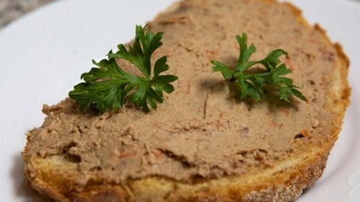

Все мы знакомы с таким блюдом как паштет. И первое, что приходит на ум – паштет из печени, т.к. этот продукт очень питательный, имеет способность смалываться в эластичную массу. Паштеты из печени птиц и животных очень полезны. О целебных свойствах блюд из печени знали еще в Древнем Египте. Задолго до открытия витамина А, Авиценна в "Каноне врачебной науки" (1025 г.) писал: "Сок козьей печени дается от куриной слепоты - в пище или в мази".
Паштет готовят не только в России, но и за ее пределами. Называется он везде по-разному. Во Франции — pate, в Италии — pasticcio, по-немецки это звучит как pastete, в грузинской кухне овощной паштет называют "пхали". Но суть-то у этого блюда одна — очень мелко изрубленный и протертый в пасту основной продукт с добавлением ароматных ингредиентов и специй. Скорее всего паштет возник тогда, когда возникла необходимость утилизировать излишки мясопродуктов. Много еды оставалось нетронутой, и ей нужно было дать новую жизнь, вот и решили перемолоть, добавить специй и подать к следующему застолью.
В кулинарии различают несколько видов паштетов.
Запечённый паштет (он же рate en croute, паштет с коркой, от лат. pastata) — «кушанье, завёрнутое в тесто» (итальянское pasta от того же корня). Этот французский деликатес сродни нашему пирогу за одним маленьким исключением — обычно его выпекали так, чтобы потом снять и выкинуть «скорлупу» из теста, оставив в целости драгоценную начинку. Внутрь, как правило, клали рубленое мясо или дичь, овощи, травы, бекон или нутряное сало. Это было большое сытное блюдо, весьма популярное и среди знати и среди богатых горожан (люди менее обеспеченные не могли позволить себе съесть столько мяса зараз). Примерно так выглядели паштеты, которыми угощались виконт де Бражелон в «Двадцать лет спустя». Впрочем, уже тогда сеньоры-гурманы заказывали своим поварам паштеты более деликатесные — из жаворонков и дроздов, например. В современной кулинарии паштет стали реже запекать в тесте и чаще — в кулинарной форме, используя для «обёртки» фольгу, ломтики сала или бекона. Подают его как горячим, только что из печи, так и холодным.
Тушёный паштет (он же рийон, или рийет, от старофранцузского rille, «кусок свинины»). Более или менее мелко нарезанную свинину (практически обязательный компонент для рийона), утятину, зайчатину или другое жирное и нежное мясо долго тушат с разнообразными специями, разливают по ёмкостям, дают покрыться жирком, выдерживают несколько недель в холодном погребе и только потом подают на стол.
Блюдо не столь парадное, как рate en croute и не столь тонкое на вкус — это пища зажиточных крестьян, а не ужин аристократа. Рийет по консистенции больше похож на наш привычный паштет, но и в нём продукты обычно измельчены, а не перемолоты. Рийон очень вкусен и напоминает советскую баночную тушенку.
Паштет в горшочке (он же Pate en terrine, или просто terrine)— рубленое мясо с грибами, пряностями, зеленью и прочими компонентами, запечённое в духовке или на водяной бане, под крышкой, в керамической или стеклянной посуде и залитое желе или жиром. Отличается более крупной текстурой и разнообразием всевозможных добавок, приправ и соусов, подаётся холодным. В горшочках готовят паштеты с ананасами, брусникой, солёными огурчиками, ягодами можжевельника, вишней, апельсинами, мадерой и арманьяком — фантазия французских поваров бесконечна. В отличие от классического рate en croute, terrine может быть не только мясным, но и рыбным и овощным и составленным из морепродуктов и даже десертным, с джемом и взбитыми сливками. Страсбургский пирог из гусиной печени с трюфелями, о котором так вкусно писал Пушкин, — тоже terrine, его готовили во Франции ещё в начале XIX века по новейшей для того времени технологии, герметично закупоривали горшочки и развозили деликатес по всей Европе. Обходилось удовольствие всего лишь в 25 рубликов за порцию (хорошая дойная корова стоила 20).
«Паштет советский» - то, что мы привыкли считать паштетом. О таком паштете ярко описывает в своей энциклопедии В.В. Похлебкин. Обычно паштет приготавливается из ливера. Самый известный вариант — классический печёночный паштет из обжаренной или отварной говяжьей печени, но есть и масса оригинальных рецептов — из сельди с сыром и картофельным пюре, сельдерейный, грибной, из курицы пополам со свининой, из брынзы и даже цитрусовый. Такие паштеты употребляются как закусочные, для холодного стола, в основном для бутербродов.
Имея в доме кухонный комбайн, блендер или процессор (измельчитель) «советский паштет» приготовить совсем не сложно.
К примеру, паштет из сельди, сливочного сыра и яиц. Для этого очищенную от кожи и костей вымоченную сельдь закладывают в чашу блендера, добавляют сыр и отварные яйца, взбивают на высокой мощности до однородности. Паштет охлаждают и подают на ломтиках белого хлеба, посыпав свежим укропом.
Не сложно готовить и паштет из печени. Печень можно брать любую, но лучше всего паштеты выходят из печени домашней птицы. Печень зачищают от пленок, нарезают ломтиками, обжаривают с большим количеством белого, репчатого лука. Остужают, измельчают в блендере со сливочным маслом, солью и перцем. Подают охлажденным. Для более интересного вкуса в тот момент, когда печень обжаривается, добавляют немного коньяка.
Для приготовления паштета из мяса подойдет любое мясо, единственным условием удачного блюда должно быть - качество продукта, а оно должно быть самым лучшим - без костей и сухожилий. Мясо для приготовления паштета необходимо мелко нарезать или пропустить через мясорубку. А для того, чтобы паштет получился более воздушным и сочным - протереть через сито.
В готовую мясную массу добавьте специи и пряности - они придадут любому паштету изюминку и неповторимый вкус. Также в паштеты можно добавлять орехи, грибы, фрукты или сухофрукты. Выпекать паштет нужно в форме в духовке или готовить на пару, а можно и отварить.
Для рыбных паштетов подойдет любое филе рыбы. Оно может быть охлажденным, мороженным или свежим. Для паштетов подходит как белая, так и красная рыба. Единственный совет при приготовлении паштета из рыбы - не используйте филе с кожей - так как от этого пострадает цвет паштета.
Компоненты для паштета проверните через мясорубку или взбейте блендером, а дальше поступайте так же, как при приготовлении мясных паштетов.
Наталья Петрова, специально для Kulina.ru